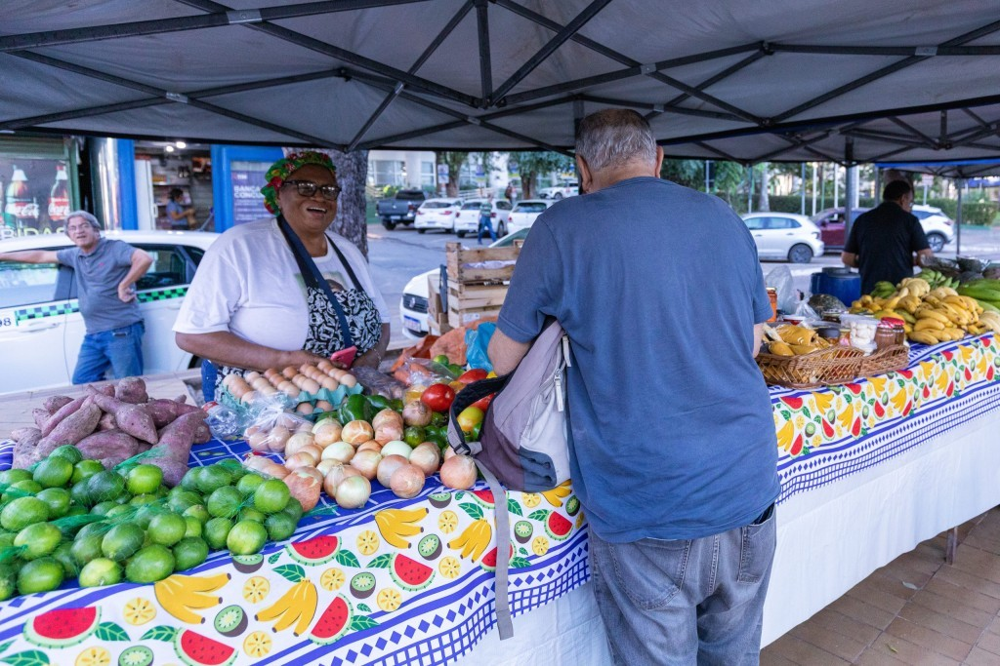

Feira de produtores volta a ocupar a praça central neste sábado
Depois de quase dois meses de reforma no calçadão, a feira de pequenos produtores da Vila Santa Rosa volta a funcionar neste sábado, das 7h às 13h, na praça central. A organização espera cerca de 30 barracas, com frutas, pães, queijos, artesanato e comidas prontas.

Comerciantes comemoram a volta do movimento
Para quem trabalha na região, a expectativa é de um fim de semana mais cheio. Dona Marta, que vende bolos caseiros há oito anos, contou que muitos clientes perguntavam pela feira nas últimas semanas. "A gente sente falta do olho no olho, da conversa e daquele café rápido com o pessoal", disse.
Trânsito terá bloqueio pela manhã
A Rua das Palmeiras ficará fechada entre 6h e 14h para montagem das barracas. Motoristas devem usar a Rua do Comércio como desvio. Segundo a prefeitura, agentes de trânsito ficarão no local durante todo o período da feira.